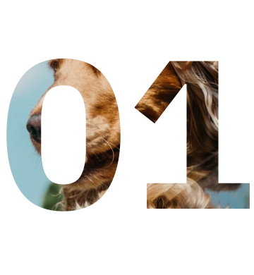
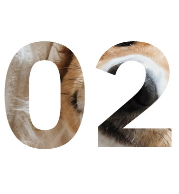
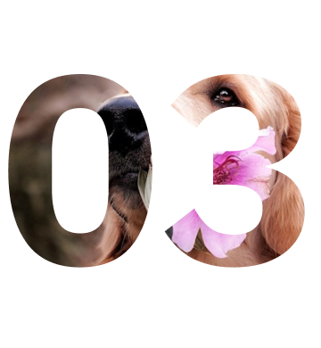
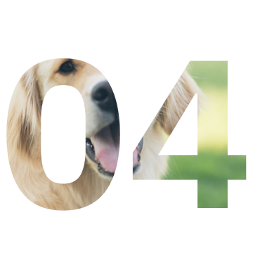
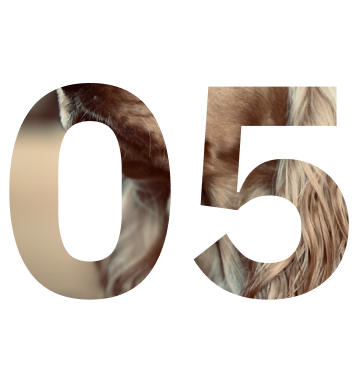
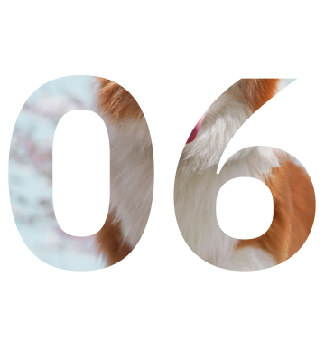

회복과 기다림의 시간, 함께해 주실 수 있나요?


임보 신청서 작성
희망 시 신청서를 작성해주세요.
거주 환경, 가족 구성, 돌봄 가능
시간 등을 바탕으로 적합한 보호자를 매칭합니다.
상담 및 매칭
신청서를 바탕으로 상담을 진행하며,
아이와 보호자의 조건을 고려해
매칭 여부를 결정합니다.


임보 계약 및 인계
계약서를 작성하고 필요한 용품과 정보를 전달합니다.
첫 인계는
보호소 또는 협의된 장소에서 진행되며,
아이의 상태와 돌봄
포인트를 안내받습니다.
임보 기간중 케어 & 소통
입양을 원할 경우 절차를 이어서 진행하며,
임보 종료 시 복귀 또는
연장 여부를 조율할 수 있습니다


입양 후 케어 & 정착 지원
입양 후 2~4주는 적응 기간입니다.
SAVEYEARN은 케어 가이드와
상담 지원으로 정착을 함께 돕습니다.
입양 전환 or 종료 보고
임보 후 입양 희망 시 절차를 이어갈 수 있으며,
임보 종료 시 복귀
일정 조율이나 연장 협의도 가능합니다.
